来源：https://rcnh7ictkhmv.feishu.cn/docx/RTyIdeLUdoCSEMxuCJbckX9Anbh
大家好，我是加号，2015年进入外卖行业，从业即时物流行业9年。
曾在头部外卖平台任职广州南区骑手配送项目负责人，也曾在平台TOP10配送服务商任职，任职范围从配送业务城市经理、运营总监、人力资源负责人、职能负责人、招聘项目负责人、自主招聘平台项目开发、即配人资公司CEO等从配送业务前端至中后端所有范围均有一定涉猎和经验。
这几年也通过在【即时物流】周边项目赚到点钱，也为身边找工作的伙伴提供了不少创业合作的机会：
1、招聘骑手（居家办公，兼职团队轻松赚钱）：23年招聘团队年营收388w
2、企业风控管理服务与法律咨询（行业企业风控管理、企业法律咨询、非诉/诉讼案件）：年利润40w
3、面试点项目（赚取租车提成）：单店年利润30w
4、理赔服务：年利润20w
5、骑手维权：团队年营收80w
我比赚钱更看重的是在这个过程中，身边很多有能力，有时间精力，想赚钱但是没有门路的朋友一起创造了一些属于自己的事业，在过程中不仅赚到了钱，团队也扩大了，也实现了多方共赢。
今天分享的主要是其中的骑手法律维权咨询服务。
目前我们团队 3个小伙伴在做骑手维权这个事情，按本年半年单人实收约12万左右（应收款项半年约20万，有部分需要等待赔付）。年收入约25-30万/人。
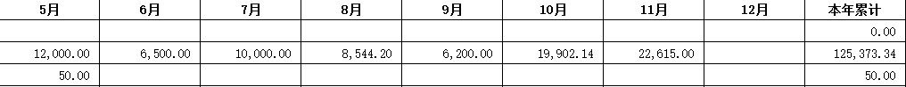
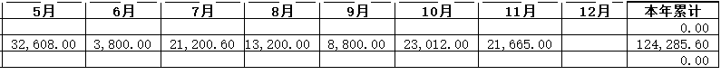
言归正传，接下来给大家说说我是如何找到这个维权项目以及如何去做的。
骑手基本配送工具是电动车，现在各种配送平台的时效会要求骑手在30-50分钟内送达一单，算上商户出餐时间，很多时候骑手的配送时间只有15-20分钟。那么不可避免的，骑手在道路上骑快车，违规行驶等问题频频出现。
根据数据显示，平均在跑5000个骑手，一年可以产生大大小小2000多个事故，也就是我们说百万单事故率36.52，即100万张配送订单就会产生37个交通事故。
像广州这个城市，一天250万单，平均每天产生 100个骑手交通事故案件，全年约3万多个交通事故。
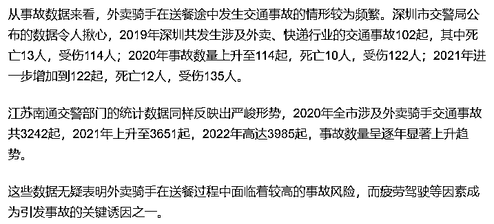
骑手所属的平台有我们常说的“全职”和“兼职”，而“兼职”也叫“众包”，这种众包形式目前占所有骑手里面的70%。和大家所熟知的滴滴司机，同属一样的个体经营的配送个体，就是平台的“众包骑手”。
他们背后没有团队，没有后援，发生了交通事故后，他们只能自行处理，除了繁琐的交通事故处理流程，涉及交警，保险公司，保单，平台，医院等，作为一个众包个体是无法顺畅地自行完成的。
当事故产生后，一个骑手需要面对自己受伤、伤者家属、伤者、肇事司机、保险公司、医院费用、治疗、保险保单解读与理赔处理、交警传唤以及定责等，涉及最少5方多则7，8方面的问题。
当自己受伤情况影响正常生活的情况下，根本无暇对接这么多的人和事，还要和保险理赔进行沟通，拿去材料，以及保证自己是否获得应获的赔偿。
收费区间一般在客户总维权金额的10-15%，具体看情况而定，也因人而异。如果个人作为我们合伙人开发业务，平均每月可以结案 3-5 单，每单收益5000-20000不等。只要坚持去做，轻松稳定年收入20w。
而这个人需要拥有的能力包括：
“沟通”能力
“共情”能力
“懂处理一定交通事故”
“懂一定保险法律知识”
很多有驾照的朋友，在路面开车这么多年，多多少少都遇到过交通事故，而在这些过程中基本已经掌握一定的这个业务所需的能力了。
如果想更好的赚钱，必须再更加深化“交通事故处理”和“保险法律知识”两个板块，这两块知识和经验越丰富，做这个事情就越得心应手。
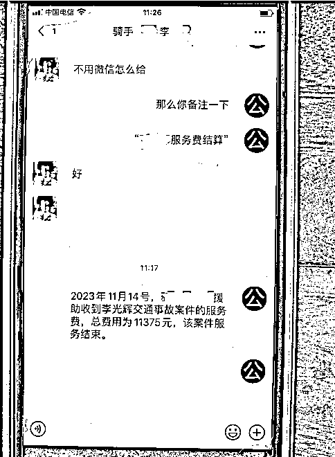
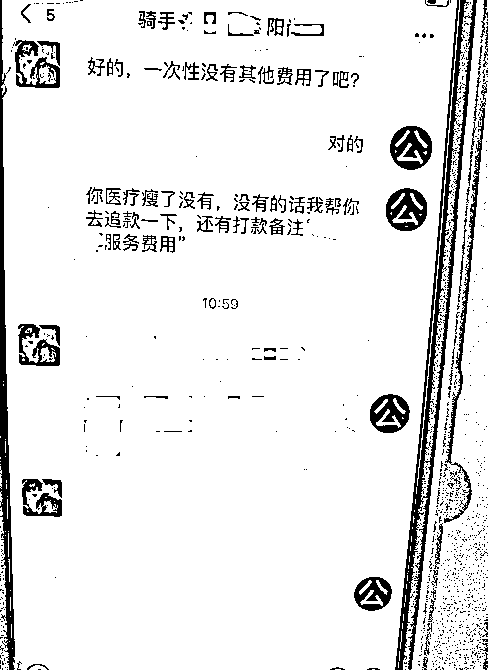
后收款，除非是转介绍且当事人有能力支付，否则一般都是先签订合同，等维权款项收到再进行收款。
这种收款方式当然存在一定风险，所以才要签订相关的服务合同。
项目本质上是一个法律咨询＋帮助客户解决问题的工作，帮助客户合法、合理、快速的“拿到应有的赔偿”，实现双赢。
律师是我们做这个项目的很好的合作伙伴，可以以律所业务经理、律师助理的名义去开发业务，当然前提是要获得律师/律所的首肯和同意。当案件无法通过私了或理赔解决，需要转移到司法途径的时候，我们的案源也是律师所需的庭审案源。可以以这方面去和律师洽谈合作。
特别注意：
没有律师资质的各位朋友，我们只能处置非诉案件，涉诉案件请通过执业律师/律所进行帮助客户解决案件问题。
客户来源，主要是通过抖音、视频号、小红书等平台，发布骑手类视频、帖子进行引流，视频可以通过自己原创，也可剪辑实现。原创需要的时间更多，但更稳定。或者也可以在别人作品下截流。核心玩法还是从公域转到私域，进行私域转化。
原创方面可以通过一些有对立性话题引起讨论（下图），截流方面可以搜索相关“骑手赔偿”、“骑手交通事故”等关键字眼案件，在平台上截流。比较费帐号就是了，这个就不一一做展示了，大家可以自己去尝试。
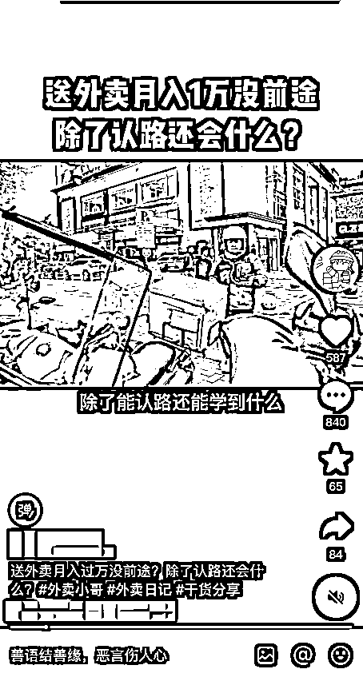
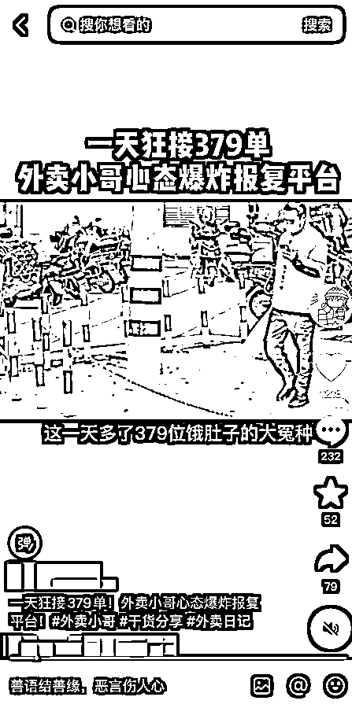
需要注意的是：帐号都是消耗品，被封都是正常的，多准备一些。
至于其他渠道合作，需要你在这个行业有一定时间的了解和资源的情况下，可以开始做这块的拓展。后续可以通过已有的资源做二次的客户转化，内推，部分线下渠道合作，通过案源过来，由我们去协助完成维权。
项目本质上是个服务项目，最终目的是要实现客户能拿到钱，怎么能让客户相信你能帮助他很重要。是促成双方能否达成契约的重要因素。
需要做的有以下几个因素：
① 律所背书：可以通过律所为你背书，和律师律所达成合作关系，提供涉诉case的案源，让律所同意你的名片打上律师助理或相关律所的关联信息，提高个人在于客户促成交易前的可信度，降低信任成本。客户一般会第一时间问你相关资质。
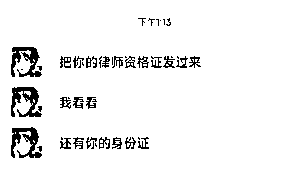
② 法律咨询企业背书：理由同上，比律所背书要简单，但是可信度没有律所高。可以通过自己注册一个主体或者挂在相关主体上，某查查上面找本地的去谈合作即可。
③ 真诚不乱夸海口：在了解客户的保单、情况之前不要以经验之谈夸下海口，“我们接触这种案件很多，你这种属于工伤案件，一般都能拿X十万”，这种话术是目前在市面上大多“黄牛”律师的统一话术，而在配送行业，一定要搞清楚来龙去脉，骑手合同，工作属性，保单。了解清楚才有发言权，不要乱夸海口成为“黄牛”，害人害己。就算最后维权成功你也可能拿不到属于你的服务费。正确的方法参考下面的case。
④ 深入了解客户情况：清楚知悉客户目前所处的困境和核心难处，一般在骑手维权的case中，大多情况都是现金流问题，骑手当下没有钱治疗。我们要清楚怎么帮助他暂时能够渡过难关，先把病治好，再谈赔偿。
像我们今年遇到的一个case，骑手问题是手上没有资金治疗，没法治疗，更没法谈赔偿的情况导致几乎没法促成我们的单子。在这种前提下，我们通过系列操作从肇事司机，骑手个人的花呗借呗，司机交强险、骑手保险4侧缝缝补补了4w，让骑手把病治好，成功在过程中获得信任，最终才把单子签下来。
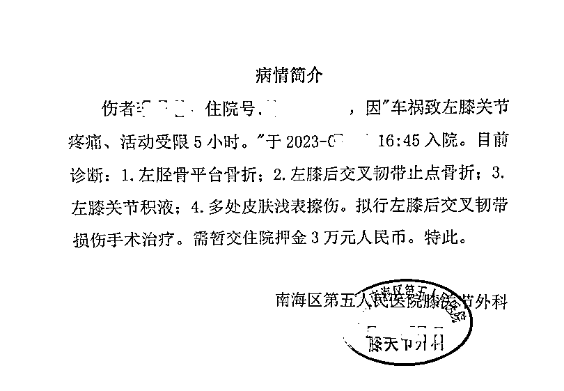
同样是上面的case，我们要对保险规则，保险监督机制有较为深入的了解，才能这么好的解决并获取客户信任。
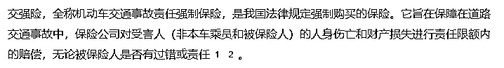
① 我们必须要认真研读客户的保单：每一个客户的保单大同小异，但是正正就是小异，会影响到客户的直接维权金额和难度。
“小异”一般指特别条款、赔偿条例内的无责任比例、免责条款、除医疗和一次性赔偿外的相关赔偿金额，提前做好工作，才好准备好赔偿需求的材料。
② 对客户有利好的条款要着重找出并加以使用，像上面的交强险垫付，保险垫付规则要主动帮助客户询问。
③ 保险的一些监督机制，投诉通道要清楚，通过监督，投诉等避免保险公司偶尔出现的不愿赔付或者有争议的部分，减少因为争议要仲裁、诉讼的机会。司法程序会影响我们的收款时效，一旦进入司法程序，案件可能就会需要半年到1年的时间结案，非常影响我们的收益。
Ⅰ、了解清楚保险的理赔环节，包括：
①理赔所需的材料：首诊证明、住院清单、费用清单、发票、交通事故责任认定书、建休单等等，对这块自己要有个登记的清单和要求。（因为其它业务的原因，我们有自研发系统去做登记，像以前没有系统时候用表格登记也是完全没问题的）
②理赔流程所需的时间，在保险公司收到相关材料，需要多少天的时间进行赔偿打款
Ⅱ、赔偿谈判将主导权交到你手
①跟客户要求不能与肇事方或任何赔偿方私下谈判，容易出现被不合理的金额、隐形条款、或者通过低额赔偿规避责任的情形，赔偿一定要参与进去
②要提前和客户商量好谈判金额的底线，有目标，合理地要求赔偿，过高或过低都会影响维权的进度。过高会影响流程进入司法程序，过低又会损害客户利益
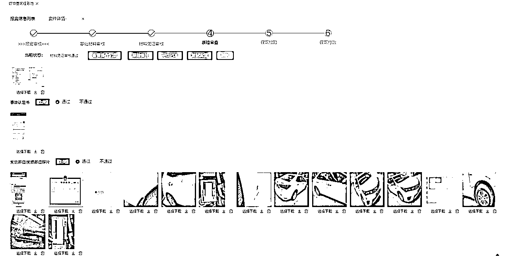
提前准备好几个合同需要线下签订：
①赔偿合同：肇事方、责任方、赔偿方支付所有赔偿金额给客户前，都尽可能签订一张赔偿协议（赔偿方与客户之间的协议）。除了保障固化赔偿金额，促成双方意愿外。对我方也是保障，可以通过赔偿协议向赔偿方要求出示支付凭证，转账记录等。防止客户实际维权金额有部分隐瞒，导致我方收益受损。
②服务合同：我们与客户之间签订一份服务协议，内容为委托服务类。因为在这类型案件中，骑手一般都是没有能力在前期支付服务费的，更多时候需要等他收到相关赔偿款项后才能支付费用，那么合同就至关重要。
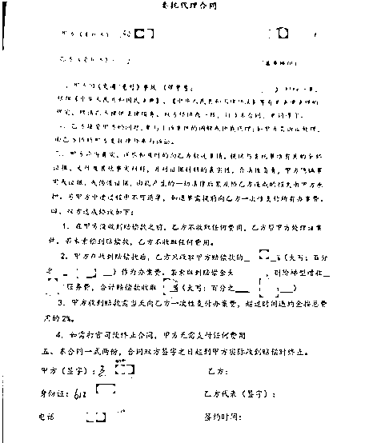
我们的客户大多是骑手，而骑手很多时候都是比较“接地气”，骑手愿意信任我们而不是更具权威的律师的原因，更多不是取决我们展露出来的专业水平，而是谁更多的从他的角度出发考虑问题和事情。律师更多的通过法律依据、合同这些通过司法途径去索取赔偿。而这种新型的关系，就算是律师也经常出现败诉的情况。
我们更多的是通过可以获取赔偿的多方去进行尝试（保险方、肇事方、用人单位等），通过对行业的专业知识和了解，对赔偿方进行协商、投诉等方式，尽可能快的为骑手争取应得的利益。当赔偿方知道你懂行，就不敢继续“忽悠”，只好按照规定尽快赔偿。
有时候我们可能会为了时效而放弃所谓少额的“不定赔偿”。某些协商不成的赔偿就算法官审理都难以一下定性，为了一千几百拖一年的案件，这也是客户不愿意看到的。
前面说到了，有很多律师开拓这类型的业务时，都会许诺客户有多少多少的赔偿，在我了解中得知，律所这种case其实很多烂账，骑手收到钱跑路，就算你起诉他，能赔偿，也需要自己承担时间和经济成本。
而我们在做这个事情的时候，一直都是以和客户说实话为核心，告知客户一般来说这种案件可以有多少的金额，并且会告诉客户哪些金额是可能有也可能没有的，如果想要快，可以选择舍弃一些存在较大争议的金额，也帮助客户通过协商去争取金额的上浮。
并且在沟通的过程中，我们更多不是扮演一个指导客户做什么的角色，而是帮助他去整理，收集，沟通，像朋友家人的一个角色，沟通方式不官方，和客户交朋友。甚至为客户对外扮演家属角色，减少客户在维权和治疗过程中的负担。（线上线下交付均可）
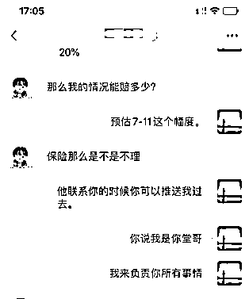
这样子做下来，我们做了几年都没有出现过一个客户收到了款项然后不支付服务费的问题。和我们签约的客户都能拿着相对满意的金额过上正常的生活。
配送行业的发展越来越迅速，配送到家已经成为了我们生活不可或缺的一部分，以前大家吃饭到外面吃，现在点外卖。再到现在买菜，商店、超市、买药都可以送上门了，骑手的群体在每年的增加，虽说通过各方的管控，对交通违规的管理这些，事故率会随之下降，我们也希望发生事故的人少些，但案件永远会随着基数的增长而越来越多，而我们能够帮助这些利益受损的人拿回应得赔偿也是一件好事。
现在愿意做这块的律师是很不多的，劳动关系，三者人伤民事这类型的case远不如一单商业case来快。而且劳动关系类的还多一道仲裁，还会增加时间成本。高额的律师费也不是骑手能支付的起的，毕竟没人能保证诉讼都是胜诉，对于受伤的骑手来说，快速，稳妥的拿到应得赔偿才是他们想要的。
所以这块的空间会越来越大，也能成为我们一条稳定的业务线。
如果有圈友想做这个事情呢，还是要注意几个事情的：
1、提前做好准备，上面说到的资质和背书，非常重要；
2、可以去尝试处理一下身边发生的一些交通事故，或者问问发生过朋友交通事故的处理流程，某音搜索等方式。简单了解保险、交通事故处理这些内容，这些知识和信息现在也是非常容易获取的。
3、去找找身边的律师资源，一般来说身边几个人总有人有律师朋友的，先做建联，了解合作是否可行。实在没有资源，我们也有有偿的资源可以推荐给大家，但是有一定限定的区域。
4、如果没耐心，或者想赚快钱我不建议碰这个项目，毕竟还是有一定的回款周期的，但是只要持续做下来，这也是个很稳定的业务。周边人介绍的客户会慢慢积累变多。
说了这么多，感谢你耐心的看到了这里，分享的目的是希望在骑手、保险、法律相关的从业者，除了可以作为主业，也可以作为副业去做这个项目，可以让更多的人在挣到钱的同时能够帮助到我们交通事故伤者以及家属。也希望可以通过这个分享链接到更多可以在不同事业链路上资源共享，合作共同前进的朋友，感谢！